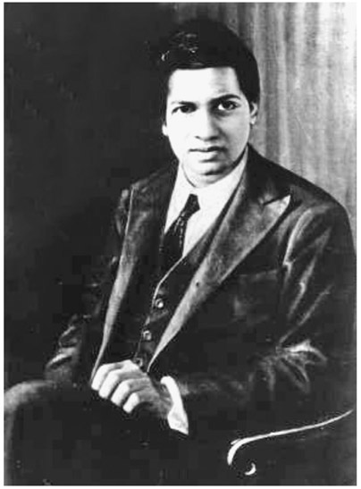
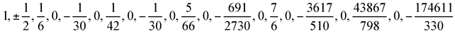
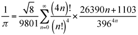
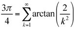
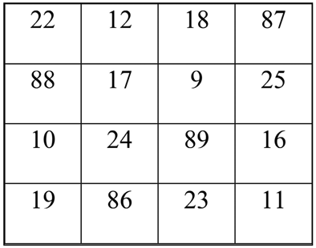
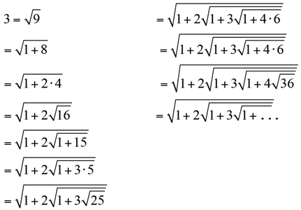
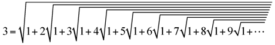
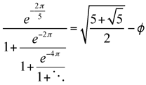
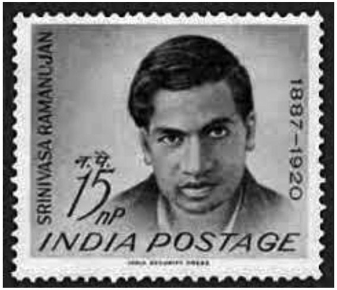
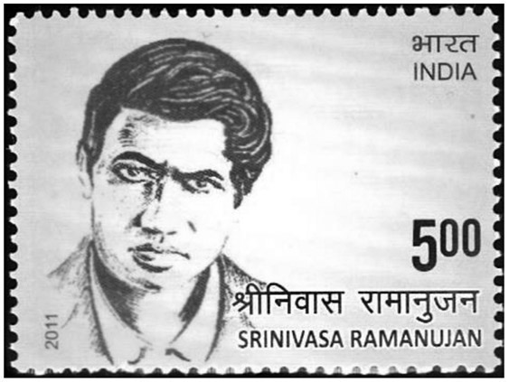

Srinivasa Ramanujan: Indian (1887–1920)
Although many books have been written about famous mathematicians, not many are so lauded as to have a full-length film produced about their lives. The title of the film The Man Who Knew Infinity1 is the same title as the book by Robert Kanigel2 on which this film is based. It highlights the short life of the genius mathematician Srinivasa Ramanujan, who could claim no formal higher education and yet showed a brilliance that allowed him to be accepted by the leading British mathematicians of his day; one such was G. H. Hardy. A cute anecdote that can illustrate the brilliance of this mathematician occurred shortly before he died and was lying ill in a hospital in London. His now close friend Hardy went to visit him in the hospital and recalled a story that describes his brilliance in simple terms3: “I remember once going to see him when he was ill at Putney. I had ridden in taxi cab number 1729 and remarked that the number seemed to me rather a dull one, and that I hoped it was not an unfavorable omen. ‘No,’ he replied, ‘it is a very interesting number; it is the smallest number expressible as the sum of two cubes in two different ways.’” Through his unique brilliance he was able to immediately notice that 1729 = 13 + 123 = 93 + 103. Quite astonishing!
Srinivasa Ramanujan was born on December 22, 1887, in what is today Tamil Nadu, India, at the home of his maternal grandparents. He grew up in the town of Kumbakonam, India, in a house that today is a museum to memorialize his achievements. He ended up being an only child, since his three siblings died within a year of their birth. Although at age two he did contract smallpox, he survived, unlike many others at that time who had the same disease. During his youth he lived with both maternal and paternal grandparents, who against his will sent him to school. The school board dismissed him and he went back to live with his parents and formed a close relationship with his mother. Once again in primary school, he performed well in English and other subjects, but excelled in arithmetic. From there he entered secondary school in Kumbakonam. There, he had his first opportunity to be exposed to mathematics beyond arithmetic. At age eleven he was already at college-level mathematics and by age thirteen he mastered advanced trigonometry, during which time he was already developing sophisticated mathematical theorems. Within the next year, he was already receiving awards for his mathematical achievements and showed a specific interest in geometry and infinite series. When Ramanujan was fifteen, he was shown how to solve a cubic equation, and he devised his own technique for solving quadratic equations. In 1903, when Ramanujan was sixteen years old, he got a copy of A Synopsis of Elementary Results in Pure and Applied Mathematics from the library, which is a collection of 5,000 mathematical theorems by G. S. Carr. It is believed that this book inaugurated his genius for mathematics.4

Figure 43.1. Srinivasa Ramanujan.
Ramanujan’s brilliance began to manifest itself when he further investigated the Bernoulli numbers; when he tried to explain it to his peers, he found that it was far beyond their ability to comprehend what he was saying. The Bernoulli numbers is a sequence of rational numbers often used in number theory. The first twenty Bernoulli numbers are

. (See chap. 22.)In 1904, he entered the Government Arts College in Kumbakonam, where he excelled in mathematics, but found absolutely no interest in any of the other subjects. As a result, by 1905 he dropped out of school and left home, eventually enrolling at Pachaiyappa’s College in Madras, India. He was no more successful there than previously, failing all exams except mathematics, where he continued to excel. He eventually left this college without a degree so that he could pursue further research in mathematics. He lived in extreme poverty with the threat of starvation regularly hanging over him. It was not until 1910 that the founder of the Indian Mathematical Society, Professor Ramaswami, recognized his talents and brought him as a researcher to Madras University.
Life moves on; on July 14, 1909, Ramanujan married a girl (Janakiammal), who was selected by his mother and who was only ten years old at the time. This was an Indian custom and not unusual. His new wife stayed at home until she reached puberty and was then allowed to live with her husband. Now with family responsibilities, Ramanujan was in search of a job—in particular, a clerical position. In the meantime, he sustained himself by tutoring students at Presidency College. During this time, Ramanujan fell seriously ill a few times and each time was saved by physicians offering their services pro bono. During his last sickness, he thought he would not survive and gave his notebooks to colleagues for safekeeping, but when he recovered he retrieved his books and continued his research. In 1912, along with his mother and wife he moved to George Town, Madras. Finally, in May 1913 he was able to get a research position at Madras University and moved to Triplicane with his family. Through a variety of recommendations, and despite concerns of the authenticity of his work, Ramanujan did his research with the financial support of the head of the Indian Mathematical Society, Ramachandra Rao, who also helped him publish his work in the Journal of the Indian Mathematical Society.
As a simple example to demonstrate the genius that Ramanujan possessed, consider the formula he developed to get the value of π:

Another such effort resulted in the following relationship:

He also did some playful things, such as creating this very unusual magic square:

First of all, as with all magic squares, all the rows, columns, and diagonals have the same sum. In this case the sum is 139. However, with this unusual magic square there are also additional sums that total to 139, such as the following:
- the sum of the four center squares,
- the sum of the two center squares in the top row and the two center squares in the bottom row,
- the sum of the two center squares in the left-hand column and the two center squares in the right-hand column.
- the sum of the four corner 2 by 2 squares, and
- the sum of the four corner cells.
By now you must realize the genius of this man to create this fabulous magic square. It should also be noted that Ramanujan developed a series of other such magic squares; the topic surely fascinated him.
We might also look at some of his other elementary discoveries, such as his nest of radicals:

which eventually will look like

Most of Ramanujan’s discoveries are clearly far beyond the scope of this book, so we present merely a few to demonstrate the brilliance of the man.
Mathematicians in India became fascinated with Ramanujan’s talent and began to connect him with mathematicians in England. Some of the English mathematicians did not even reply to his letters because he claimed to have no formal education. However, in 1913, enthralled by the book Orders of Infinity, and looking to expand his horizons, Ramanujan wrote a letter to the book’s author, the famous English mathematician G. H. Hardy (1877–1947), who was a professor at the University of Cambridge. Once again, he indicated his lack of formal education, but included a collection of some of his findings to see what Hardy would think about them. Hardy was amazed at the ingenuity of what he found in this letter. Relationships were proposed, which he had never seen before, such as

, where ϕ represents the golden radio.This ultimately prompted Hardy to facilitate Ramanujan’s first trip to London in 1914. As the collaboration with Hardy and colleagues began—and they were truly fascinated by his lack of formal education—they were genuinely amazed at his discoveries.
This was about the time when World War I emerged, and food rationing was a problem for Ramanujan, who then began having further health problems. Despite his physical frailty, Ramanujan was invited to enroll as a student at Cambridge University, and by 1916 was awarded a degree, which was then called a bachelor’s degree, but today is valued as a PhD. Sadly, his illness became worse in 1917, and through most of the year he spent his time in nursing homes. The following year, he was elected as a fellow of the Cambridge Philosophical Society, and shortly thereafter he received the greatest honor of his life, being elected a fellow of the Royal Society of London, which was formally confirmed in May 1918. This was followed by further acceptance of his brilliance by being elected a fellow of Trinity College of Cambridge University.
The following year Ramanujan returned to India with a reputation that, as it was stated at the time, was greater than any Indian had previously enjoyed. However, his health did not improve much and eventually began to decline even further. He died in India on April 26, 1920, at the age of 32.
Fortunately, much of his writings have been saved and ultimately published. This began shortly after his death when his brother Tirunsrayanan began to collect his handwritten notes for further publication. It should be noted that much of Ramanujan’s work was not accompanied by proof, yet it was always shown to be correct. It is speculated that since paper was expensive, he did the proof on a slate and then copied the result on paper. It was not uncommon that slates were used in India at that time.
Posthumously, Ramanujan has received countless accolades. In India, December 22, his birthday, is often celebrated as “National Mathematics Day.”
In 1962 the government of India issued a postage stamp with Ramanujan’s picture (fig. 43.2). A second stamp (fig. 43.3) was issued in 2011 with a different design, once again commemorating Ramanujan’s genius. To further honor his remarkable achievements, the Indian government declared that Srinivasa Ramanujan’s birthday, December 22, would be considered National Mathematics Day in perpetuity.

Figure 43.2.

Figure 43.3.